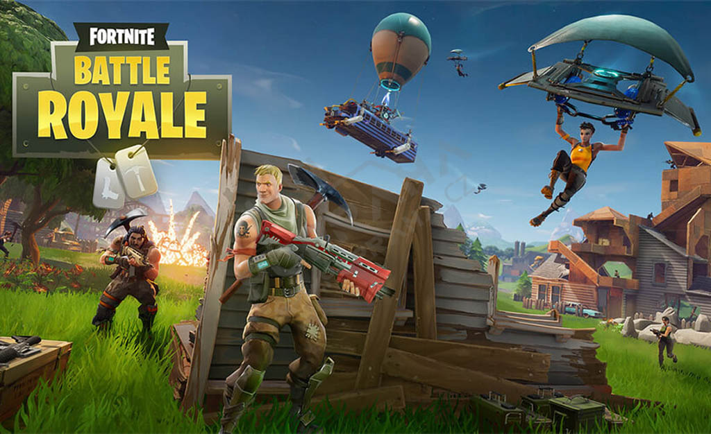

Fortnite

🎮 Fortnite érdekességek
1️⃣ Nem BR-nek indult
A Fortnite eredetileg Save the World volt, nem battle royale.
2️⃣ Az építés egy bugból lett feature
Az építkezést csak feljutásra szánták, nem harcra.
3️⃣ A Double Pump szándékosan maradt
Viral klippek miatt hagyták bent egy ideig.
4️⃣ A régi map részei nem törlődtek
Technikai értelemben még ma is léteznek.
5️⃣ A fekete lyuk esemény
Napokig nem lehetett játszani – direkt.
6️⃣ Koncertek millióknak
Travis Scott és Ariana Grande élő eventek voltak.
7️⃣ Fortnite = digitális popkultúra tér
Marvel, Star Wars, filmtrailerek egy játékban.
8️⃣ Majdnem törölték a játékot
Ha a BR nem robban, ma nincs Fortnite.
9️⃣ Az OG Fortnite nem csak nosztalgia
Lassabb tempó, tisztább map, kevesebb cucc.